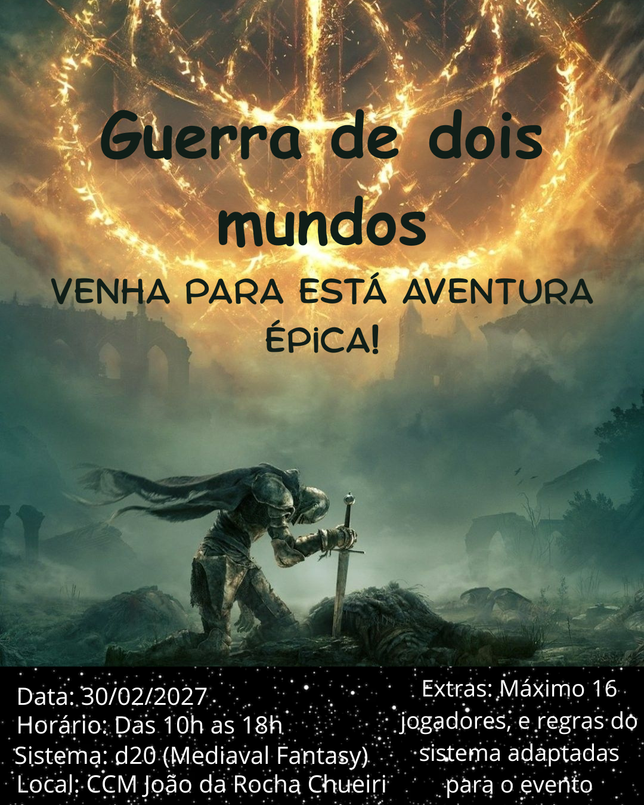

Introdução
A Rocha Chueiri é uma escola mágica ancestral, escondida entre as Monstanhas Nebulosas, onde os jovens de diversas raças aprendem magia ao lado de criaturas mágicas como grifos, fênixes e dragões. As turmas se preparam para a Competição Anual, organizadas pelo Arquimago Professor, onde cada equipe enfrentará desafios mágicos em busca da vitória.
Guerra de dois mundos


A rivalidade está acirrada, e apenas as famílias mais habilidosas e unidas consquistaram o troféu. A disputa promete revelar não apenas talento, mas também segredos ocultos entre os alunos.
A força de cada é medida por seu nível, e para evoluir é preciso dedicação em duas frentes, o estudo da magia e a caça de monstros.

Aprendizado teórico acontece de forma constante, mesmo á distancia, como um susurro de sabedoria que nunca se cala, já a caça exige coragem e presença.